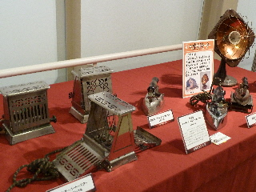
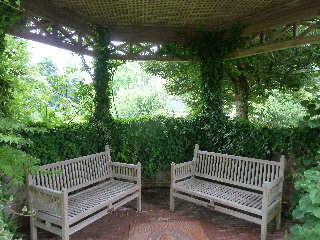
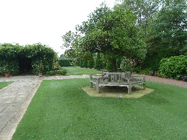
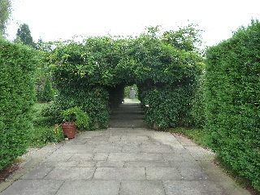
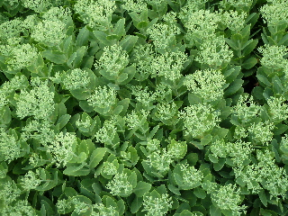
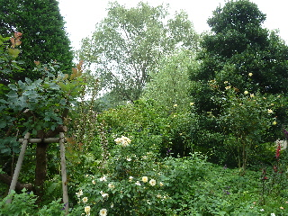
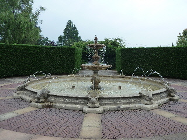
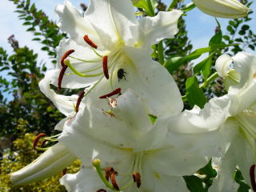
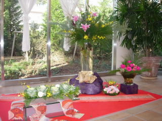
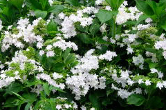

松江イングリッシュガーデンのエジソン展
2013/07/28
エジソン展なんていうと技術物だとか、研究物みたいで難しい感じです。

実際見てみると身近な商品が沢山です。
あれもこれもエジソンさんが発明してたんですね。
凄いな。
難しい内容じゃなかったのて見やすかったです。
島根県松江市西浜佐陀町330-1
閉園しました。
2013/07/28
エジソン展なんていうと技術物だとか、研究物みたいで難しい感じです。

実際見てみると身近な商品が沢山です。
あれもこれもエジソンさんが発明してたんですね。
凄いな。
難しい内容じゃなかったのて見やすかったです。
2013/07/28
近いし無料なので、とっても行きやすい場所なんですが、意外と行かない松江イングリッシュガーデンに久々に行きました。
何か目的がないとなかなか行けないものです。
今はスイレンの時期みたいですね。
屋内でも屋外でも色々展示してありました。






いい景色ですね。
のんびり散歩するのに丁度いいです。
そんなに広いスペースじゃない場所に、沢山のものがあるのが凄いです。感心しちゃいますね。
2010/07/25
外は暑いですね。
白いユリが沢山咲いていたんですが、ちょっと時期が終わりかけかな？って思いました。

カナブンがくっ付いてたので、写真をとりました。
ユリの花にも寄って来るんですね。
2010/1/17
冬で寒いですが、今日は晴れてておでかけ日和だったので、イングリッシュガーデンに寄ってみました。
お庭に花はちょっとしか咲いてませんでしたが、入り口に豪華な花が飾ってありました。

温かい建物の通路からお庭を見たんですが、普段あまり見ない植物をのんびりと見れてなかなか良かったです。冬でも晴れた日にはお勧めです。
中に入っているレストラン（LAUT）のメニューがあったので見たんですが、思っていたより値段が高くなかったので、今度行ってみたいなと思いました。
何かの読み物にランチが2500円でちょっと高級だな～なんて思ってたんですが、ランチコースなんですね。
コース以外のメニューは
パスタランチ 1250～
ピザランチ 1250～
お魚ランチ 1650～
お肉ランチ 1500～
って書いてありました。パン、サラダ、ドリンク付きだそうです。
ティファニー美術館の時に一度見たんですが、その時よりも木が生長したせいか緑が深くなってました。
植物がボリュームアップしたぶん見る所が増え、庭が広く感じました。
植物の種類・量も多いですし、池があったり、噴水、オブジェ、アーチ、教会（今は中が見れないようです）、広場、ホール、温室等、盛りだくさんの施設なのに入場無料は凄いですね。
時間があったらまめに寄りたいです。
澤井珈琲さんの売店があったので、コーヒーを飲んでのんびりした時間を過ごしました。
薔薇の見頃は少し過ぎたようですが、それでも他の花が沢山咲いててなかなか綺麗でした。
中でも白いアジサイが特に目立ちました。
